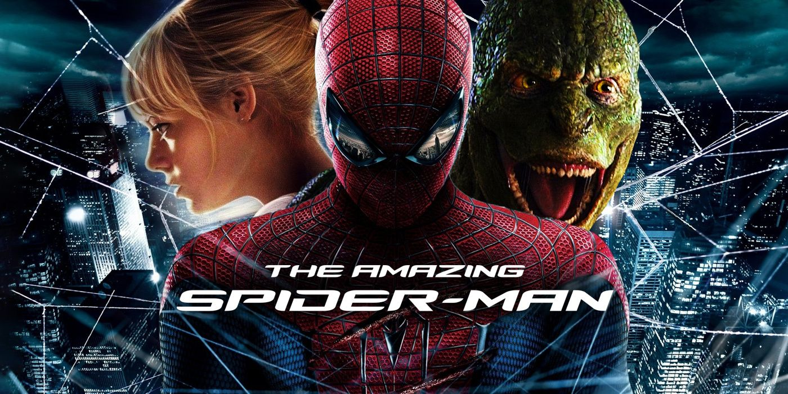
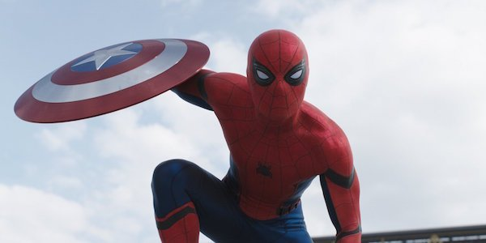

Series Order
- Spider-Man: Into the Spider-Verse (2018)
- Spider-Man (2002)
- Spider-Man 2 (2004)
- Spider-Man 3 (2007)
- The Amazing Spider-Man (2012)
- The Amazing Spider-Man 2 (2014)
- Captain America: Civil War (2016)
- Spider-Man: Homecoming (2017)
- Avengers: Infinity War (2018)
- Avengers: Endgame (2019)
- Spider-Man: Far From Home (2019)
- Venom (2018)
- Venom: Let There Be Carnage (2021)
- Spider-Man: No Way Home (2021)
Spider-Man: Into the Spider-Verse (2018)
Bitten by a radioactive spider in the subway, Brooklyn teenager Miles Morales suddenly develops mysterious powers that transform him into the one and only Spider-Man. When he meets Peter Parker, he soon realizes that there are many others who share his special, high-flying talents. Miles must now use his newfound skills to battle the evil Kingpin, a hulking madman who can open portals to other universes and pull different versions of Spider-Man into our world.

Spider-Man (2002)
"Spider-Man" centers on student Peter Parker (Tobey Maguire) who, after being bitten by a genetically-altered spider, gains superhuman strength and the spider-like ability to cling to any surface. He vows to use his abilities to fight crime, coming to understand the words of his beloved Uncle Ben: "With great power comes great responsibility."
Spider-Man 2 (2004)
When a failed nuclear fusion experiment results in an explosion that kills his wife, Dr. Otto Octavius (Alfred Molina) is transformed into Dr. Octopus, a cyborg with deadly metal tentacles. Doc Ock blames Spider-Man (Tobey Maguire) for the accident and seeks revenge. Meanwhile, Spidey's alter ego, Peter Parker, faces fading powers and self-doubt. Complicating matters are his best friend's (James Franco) hatred for Spider-Man and his true love's (Kirsten Dunst) sudden engagement to another man.

Spider-Man 3 (2007)
Peter Parker (Tobey Maguire) and M.J. (Kirsten Dunst) seem to finally be on the right track in their complicated relationship, but trouble looms for the superhero and his lover. Peter's Spider-Man suit turns black and takes control of him, not only giving Peter enhanced power but also bringing out the dark side of his personality. Peter must overcome the suit's influence as two supervillains, Sandman and Venom, rise up to destroy him and all those he holds dear.
The Amazing Spider-Man (2012)
Abandoned by his parents and raised by an aunt and uncle, teenager Peter Parker (Andrew Garfield), AKA Spider-Man, is trying to sort out who he is and exactly what his feelings are for his first crush, Gwen Stacy (Emma Stone). When Peter finds a mysterious briefcase that was his father's, he pursues a quest to solve his parents' disappearance. His search takes him to Oscorp and the lab of Dr. Curt Connors (Rhys Ifans), setting him on a collision course with Connors' alter ego, the Lizard.

Confident in his powers as Spider-Man, Peter Parker (Andrew Garfield) embraces his new role as a hero and spends time with Gwen Stacy (Emma Stone) in between protecting New York from criminals. However, his greatest battle yet is about to begin. With the emergence of Electro (Jamie Foxx), Peter must confront an enemy far more powerful than he is. And when his old friend Harry Osborn (Dane DeHaan) returns, Peter comes to realize that all his enemies have one thing in common: Oscorp.
Political pressure mounts to install a system of accountability when the actions of the Avengers lead to collateral damage. The new status quo deeply divides members of the team. Captain America (Chris Evans) believes superheroes should remain free to defend humanity without government interference. Iron Man (Robert Downey Jr.) sharply disagrees and supports oversight. As the debate escalates into an all-out feud, Black Widow (Scarlett Johansson) and Hawkeye (Jeremy Renner) must pick a side.

Thrilled by his experience with the Avengers, young Peter Parker returns home to live with his Aunt May. Under the watchful eye of mentor Tony Stark, Parker starts to embrace his newfound identity as Spider-Man. He also tries to return to his normal daily routine -- distracted by thoughts of proving himself to be more than just a friendly neighborhood superhero. Peter must soon put his powers to the test when the evil Vulture emerges to threaten everything that he holds dear.
Iron Man, Thor, the Hulk and the rest of the Avengers unite to battle their most powerful enemy yet -- the evil Thanos. On a mission to collect all six Infinity Stones, Thanos plans to use the artifacts to inflict his twisted will on reality. The fate of the planet and existence itself has never been more uncertain as everything the Avengers have fought for has led up to this moment.
Adrift in space with no food or water, Tony Stark sends a message to Pepper Potts as his oxygen supply starts to dwindle. Meanwhile, the remaining Avengers -- Thor, Black Widow, Captain America and Bruce Banner -- must figure out a way to bring back their vanquished allies for an epic showdown with Thanos -- the evil demigod who decimated the planet and the universe.

Peter Parker's relaxing European vacation takes an unexpected turn when Nick Fury shows up in his hotel room to recruit him for a mission. The world is in danger as four massive elemental creatures -- each representing Earth, air, water and fire -- emerge from a hole torn in the universe. Parker soon finds himself donning the Spider-Man suit to help Fury and fellow superhero Mysterio stop the evil entities from wreaking havoc across the continent.

Journalist Eddie Brock is trying to take down Carlton Drake, the notorious and brilliant founder of the Life Foundation. While investigating one of Drake's experiments, Eddie's body merges with the alien Venom -- leaving him with superhuman strength and power. Twisted, dark and fueled by rage, Venom tries to control the new and dangerous abilities that Eddie finds so intoxicating.

Eddie Brock is still struggling to coexist with the shape-shifting extraterrestrial Venom. When deranged serial killer Cletus Kasady also becomes host to an alien symbiote, Brock and Venom must put aside their differences to stop his reign of terror.

With Spider-Man's identity now revealed, our friendly neighborhood web-slinger is unmasked and no longer able to separate his normal life as Peter Parker from the high stakes of being a superhero. When Peter asks for help from Doctor Strange, the stakes become even more dangerous, forcing him to discover what it truly means to be Spider-Man.